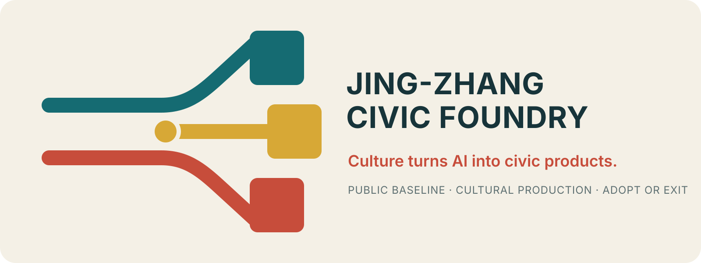
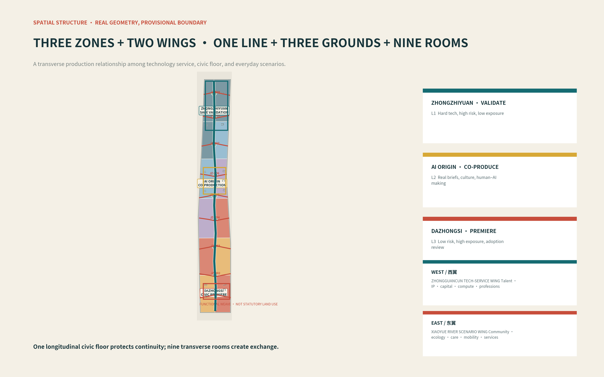
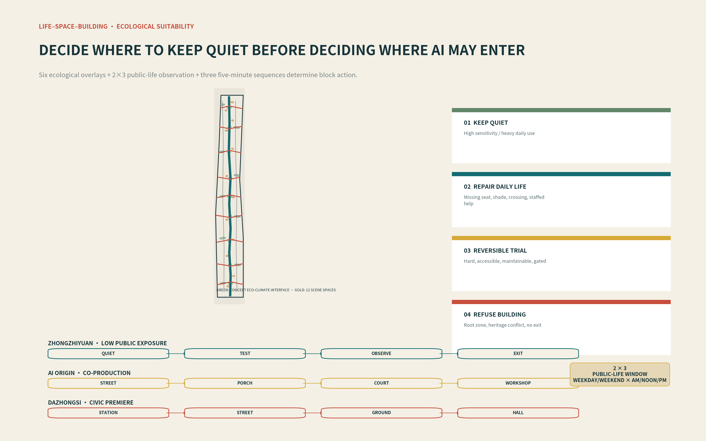
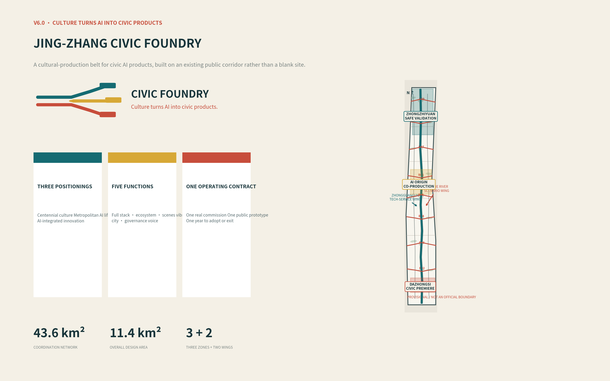
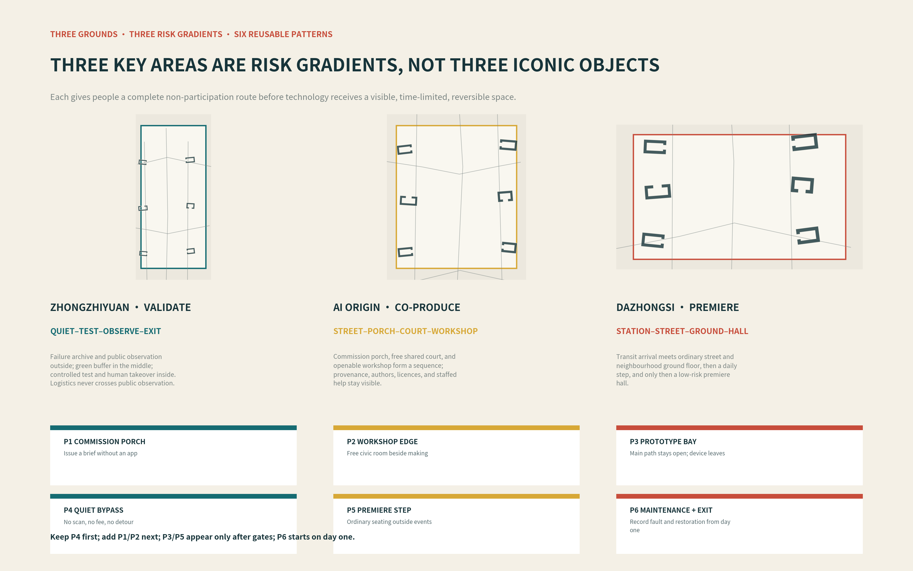
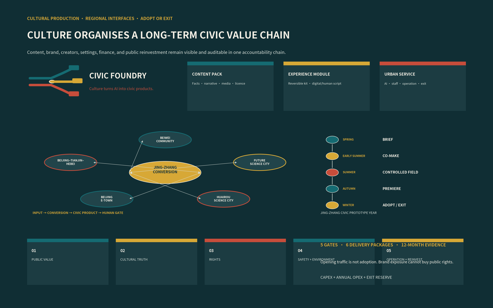

Culture turns AI into civic products.
Not another AI park inside a park. The proposal adds urban conversion capacity to an existing nine-kilometre public corridor: real problems are commissioned; culture and rights are calibrated; prototypes are co-produced; risks are graded; public use decides adoption or exit.
One real commission · one public prototype · one year to adopt or exit. Access, shade, accessibility, and staffed help survive technology exit.

Requirements are not hidden in a matrix. The cultural belt supplies verifiable context; the AI-life belt tests real use; the integrated-innovation belt closes research–making–validation–adoption. Three zones handle risk stages, while two wings supply capability and real problems.
Fact, local knowledge, contemporary interpretation, and AI generation remain distinct and correctable.
Staffed, refusable, non-digital backup; urban life works without participation.
Research, creation, validation, premiere, twelve-month adoption, and exit form one loop.
Tiered validation
Co-production
Real civic problems
Everyday service
Open rules and exit evidence

Every node asks in sequence whether life is protected, the city is legible, the location is ecologically suitable, the five-minute experience works, and the component can be tested and restored. Failure means reduce, move, or cancel.
Weekday/weekend × morning/noon/evening; mixed ground floor, small commerce, and street guardianship first.
One line, Three Zones and Two Wings, nine nodes, and four landmarks form a one-minute mental map.
Water–soil–tree–heat–sound–habitat overlays decide quiet, repair, reversible trial, or refusal.
Walking speed, eye level, shade, seating, crossing, staffed help, and exit precede architectural image.
Only components that can be tested alone, reused, maintained, removed, and rewritten by another community.

Longitudinal continuity is not a linear industry belt. Nine Urban Rooms connect western talent, IP, capital, compute, and professional services with eastern neighbourhood, ecology, care, mobility, and public-service problems on one visible ground floor.


High technical threshold, low public exposure; public observation outside, green buffer in the middle, controlled test and takeover inside.
Everyday street, commission porch, free shared court, and voluntarily entered open workshop.
Transit first meets ordinary street and neighbourhood ground floor, then a daily step, and only then a low-risk premiere hall.
The human author's experience across cultural products, media, historic districts, international art exchange, and cultural-space operation becomes content discovery, fact calibration, shared attribution, rights licensing, brand boundaries, place operation, adoption, and public reinvestment—never a claim of confirmed partners.

Facts link to sources and reviewers; physical heritage precedes interpretation; unknown remains unknown.
Problems, co-authors, versions, failures, and the next maintainer are visible.
Purpose, data, risk, human accountability, refusal, and exit become civic visual language.
Daily problems → civic briefs with beneficiaries and a non-AI baseline.
Frontier R&D → city-validation packs with context and public explanation.
Scientific knowledge → verifiable and correctable public cultural products.
Robotics and manufacturing → service components with maintenance, takeover, and exit.
Multiple urban contexts → patterns, protocols, and localisation methods.
All five are conceptual interfaces pending confirmation. No partnership, investment, procurement, policy, or data-sharing arrangement is claimed.
Spring sets the brief; early summer co-makes; summer validates in control; autumn premieres; winter publishes adopt-or-exit decisions. This is not another generic AI conference. Every beat leaves a brief, rights pack, test report, service route, or exit record.
Existing park, Three Zones and Two Wings, One Line–Three Grounds–Nine Rooms.
43.6 km² network, 11.4 km² corridor, three prototypes.
Three exposure and risk gradients.
Civic floor and functional weave, not statutory zoning.
Continuous line, nine stitches, cycle/logistics separation.
Suitability, quiet-active rhythm, climate gardens.
Existing frame, new insert, reversible layer.
Twelve projects, first 100 days, six delivery packs.
Twelve contracts with human accountability and exit.
Spatial recalculation and adoption definitions.
3 positionings, 5 functions, 3+2, agent.1–6.
Deterministic, spatial, visual, professional, bilingual, hashes.
Formal basis, cases, author method, usage boundaries.
Geometry, controls, conditions, partners, delivery pending.
Overall and key-area geometry remains provisional with official_boundary=false. It is not an official boundary, precise area, control plan, ownership, heritage, road, or engineering basis. Recalculate the whole package when official polygons are supplied.